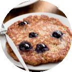
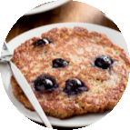

How to Make Gluten-Free Blueberry Almond Pancakes
High fiber, lower in carbs, gluten-free, no added sugar, and high in protein - these are not your average pancakes! How did we do it? We replaced wheat flour with almond flour, used a mashed banana instead of sugar, and added ground flax seed for extra fiber. Just one of these pancakes will power you through your morning!
10 min prep time | 6 servings | 1 pancake
Step-by-Step Instructions:
1. Add the eggs, egg whites, ricotta cheese, vanilla, almond milk, banana, lemon juice, and lemon zest to a blender. Blend until smooth.
In a small bowl, combine the almond flour, ground flax seed, and baking powder. Add the dry mixture to the liquid mixture in the blender and blend until smooth.
2. Coat a nonstick saute pan with cooking spray and place over medium heat. Scoop a scant 1/3 cup of the pancake batter into the pan and top with 4-5 blueberries. Let cook until the edges begin to brown (2-3 minutes); then flip the pancake to continue to cook an additional 2-3 minutes.
3. Remove from the pan and repeat the process for the remaining 5 pancakes.